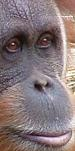
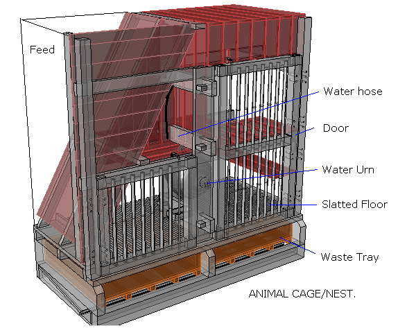
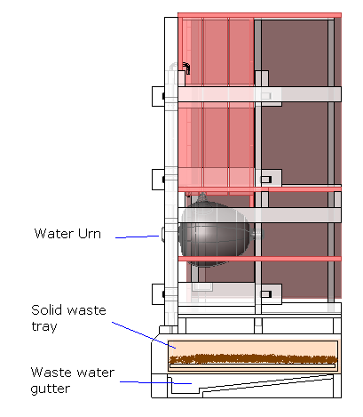
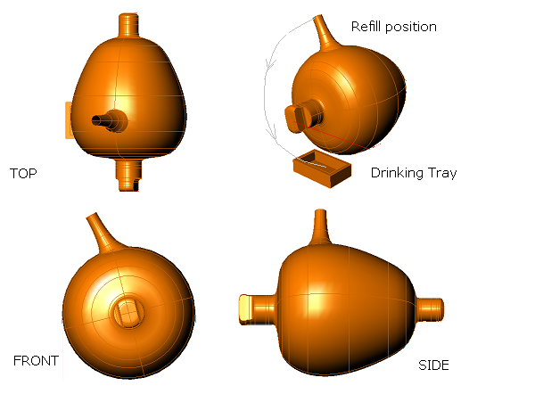
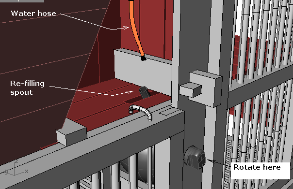
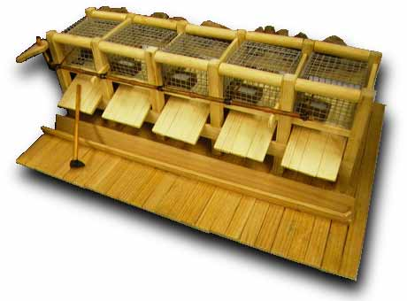
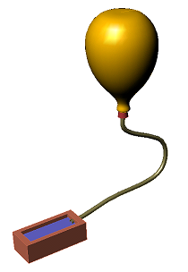
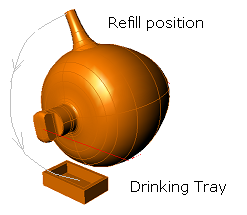
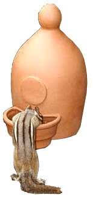

God told Noah to build the Ark with nests inside. The wordqen {kane} is translated nests every other time it appears in Scripture, but most versions substitute the word rooms only for Noah's Ark. Since there is no good reason to do this, we should take nests as the preferred option. Thinking in terms of nests rather than rooms, we begin to see a different view of how the animals may have been housed.
In Genesis 6:14, Noah is instructed to make an Ark and make nests inside.
The typical Bible gives the Noah account an unusual (even unique) translation for a common word.
This time it's qen: 12 out of 13 times it means nest, but this time
is gets the unique translation room. No help from the root word either,
 qanan {kaw-nan'}, which always means 'to nest'. According to Henry Morris
2, the word is "literally 'nests' - thus apparently each of
appropriate size for the individual animals to rest in"
qanan {kaw-nan'}, which always means 'to nest'. According to Henry Morris
2, the word is "literally 'nests' - thus apparently each of
appropriate size for the individual animals to rest in"
As nests, it would be inappropriate to imagine animals lined up on display or herded together in huge stalls. Neither option would suit animal transport anyway. Instead, we should be thinking of snug, private enclosures where an animal would hide and bed down. The enclosure should be comfortable, safe, private, warm and probably darkened. It should also be an area that is not routinely disturbed.
Ever seen a snake go into a sack? Once it's dark and warm they usually relax. A native animal rescue organization in Australia promotes opaque cages such as wood rather than glass for the keeping of reptiles. A glass window stresses the animal because they can see too much (apart from banging their head of course). With an Ark full of nests, it might be difficult to see most of the animals hiding away. Once it is darkened, warm and confined they go into docile mode, especially when the boat is a-rocking.
 |
Another factor to keep in mind is that the animals did not yet have the fear of man. This came after the Flood, when God put the fear of man into every animal (Gen 9:2), and then allowed man to eat meat. It is difficult to know exactly what the animals were like prior to this change, but perhaps they were not so wild or shy - more companion-like (Gen 2:20). Today, we would call this domestication. Perhaps all animals behaved more like domesticated animals before the Flood, which means the animals on the Ark would be easier to look after. |
Let's start with something simple. Keeping with the nesting theme and combining some watering and feeding solutions, we will consider a typical cage for a mid sized animal - such as a Ground Hog, or rabbits.

This cage has a large grain feed hopper which is filled from the mezzanine deck directly above it. The slatted floor1 allows waste to fall into the waste tray underneath, where liquid waste drains down into a gutter system at the bottom. Since the slatted floor keeps the animal from treading the manure the waste tray need only be emptied occasionally - if at all. With this arrangement, the trays of many smaller animals and most birds and reptiles would not need to be cleaned for the entire 12 month voyage.

Water is fed using a similar system to the upturned urn (See Water Dispensing), except the urn spins on a horizontal axis.

This one-piece ceramic urn allows water to be refilled from outside the cage without the awkwardness of a heavy urn. All the weight is carried by the supports, so it has the potential to hold a lot more water without becoming awkwardly heavy. This method also eliminates any pendulum motion as the Ark rocks.
The urn is re-filled using a hose, probably made of sown leather or intestine, and would be connected to the header tanks in the skylight level. Most of the piping could be rigid (pitch coated wood, bamboo, beaten copper or ceramic), and the flexible hose limited to the last section as shown above.

In Noah's Ark: A Feasibility Study, Woodmorappe shows an illustration of a smaller animal cage that would suitable for animals such as rodents. A model of this design is displayed by Arnold Mendez. 3

In the design shown above, the water is fed by a pipe into a small trough in each enclosure. It looks alike a manually operated valve is located at far left, which would only work if all five animals required similar amounts of water and it was re-filled often enough. To attempt a more automated setup is problematic, this pipe cannot be left connected directly to a header tank because water will continue to flow and spill over the troughs. Water must be metered somehow - either a plug at the end of each pipe which is removed to refill the trough occasionally, or some sort of valve arrangement that could be activated by water level (like a toilet cistern fill valve) or by contact with the animal's mouth. The valve options tend to be complex and prone to leakages. The only automatic system that appears simple and robust enough is the air-lock design since there are no moving parts and no precision sealing surfaces.
But there is a catch - this method can only supply one drinking trough for each supply container. The trough might be mounted at the junction of several cages, but probably not much more than that. The following table illustrates some variations on the air lock method of metered water delivery. All use ceramic containers since they can be made air-tight by stone firing, glazing or simply coating with pitch (preferably on the inside where it cannot be scratched and it would discourage algae).
| Various Ways to Deliver Water Using the Air-Lock Method | |||
 |

|  |
 |
| Remote re-fill. A flexible hose makes it easy to refill. The hose must be outside the cage to avoid chewing. |
Inverted amphora. Virtually a standard amphora design. Add a lid and invert it. Tricky to refill. | Rotated spout. Easy re-fill and rigid mounting supports the weight. High capacity is possible so could be used for medium to large animals. |
One piece design.
Especially suited to small animals. Very simple so could make many of these. |
With a water tank mounted in the skylight area of the roof, there would be a height difference (head) between 3 cubits (top mezzanine level) and 30 cubits (bottom level). This would give a water pressure between 2 and 22 psi (15-152 kPa). For comparison, the typical pressure in domestic pipes range from 40 to 70 psi. (275-482 kPa). The pipes are not as critical as household plumbing - the flow could be easily blocked with a finger.
1. Woodmorappe, J. "NOAH'S ARK: A Feasibility Study", ICR 1996. Return to Text
2. "Morris, H. M., The Genesis Record, Baker Book House, p181, 1976.. Return to Text
3. Arnold Mendez. <http://www.amendez.com/index.html> Return to Text